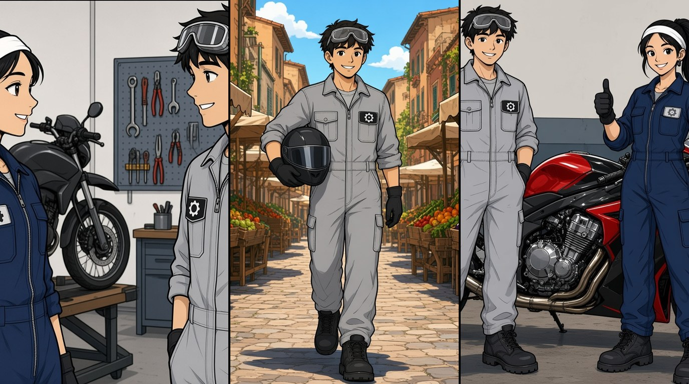

Inglese · Terza professionale AM

Past simple: cosa hai fatto ieri?
Ieri ho riparato una moto. In inglese il verbo cambia.
Every day I repair motorbikes. Yesterday I repaired a motorbike.
Sposta la leva
Stessa persona, stesso verbo. Cambia solo il quando.